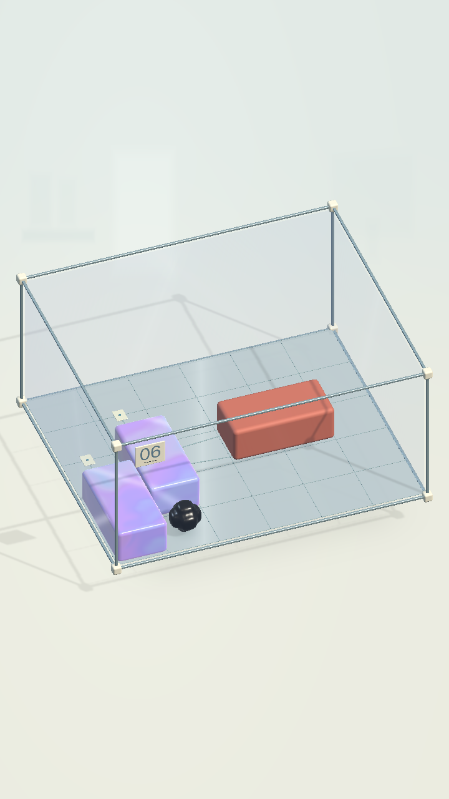
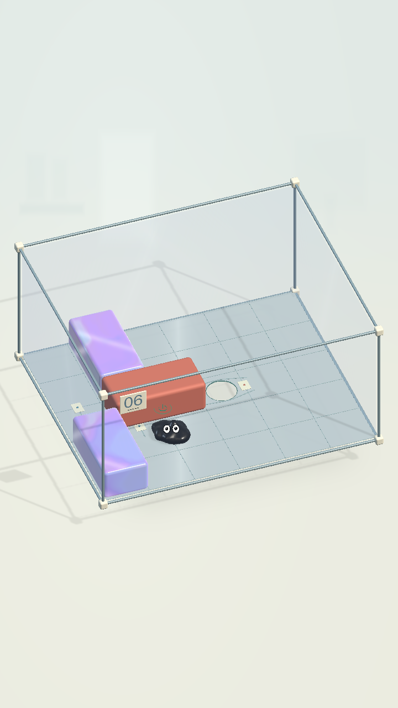

Màn 6 · Lỗ dưới khối đỏ
Dời thùng cản → kéo khối đỏ ra → thấy lỗ → chui xuống. Đã bỏ toàn bộ công tắc, nút bấm, nắp và cửa. Lỗ thật nằm trên sàn, ngay bên dưới khối đỏ.
9/9 bài kiểm tra gameplay đạt: lỗ được khối đỏ che kín lúc đầu, dời khối rồi thoát đủ 32/32 hạt trong một cơ thể; chơi lại khôi phục vị trí cũ. Đã kiểm tra đi lạc rồi quay lại, thùng bị chặn và đẩy/kéo đảo chiều. Chi tiết · Kết quả.

1. Khối đỏ che lỗDi chuyển khối chắn đường để kéo được khối đỏ.

2. Lỗ thoát lộ raChạm vào lỗ để COghe chui xuống và qua màn.
Ảnh gameplay thật từ Unity, 720 × 1280. Giữ Glass C, bảng số 06, kính bám được và các khối có lớp trơn như trước. Bố cục này thay hoàn toàn phương án công tắc dưới thùng trước đó.
Bản Mac giải trọn bằng 3 lần chạm, đủ 32/32 hạt trong một cơ thể. Lỗ lộ ra trong bản Mac · Ảnh thắng · Kết quả native player. Chưa cài bản sửa này lên iPad.